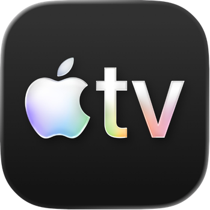
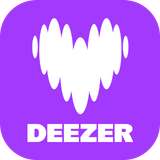
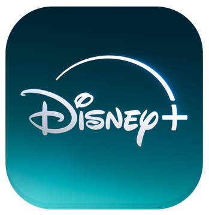

15 etapas
ExitLag
Ative sua conta e instale o ExitLag no computador.
Abrir passo a passo 5 etapasGloboplay
Ative sua assinatura e continue com sua Conta Globo.
Abrir passo a passo 2 formas de acesso · 6 etapas cadaHBO Max
Escolha o acesso por telefone ou código do assinante.
Abrir passo a passo 6 etapasSKY+ Light
Entre com os dados fornecidos na contratação.
Abrir passo a passo
5 etapasApple TV
Ative seu benefício e continue no ambiente Apple.
Abrir passo a passo 4 etapas+Qnutri
Resgate seu plano e acesse pelo Queima Diária.
Abrir passo a passo
7 etapasDeezer
Ative sua oferta mesmo sem o link inicial.
Abrir passo a passo
13 etapasDisney+
Um guia para quem ainda não tem conta Disney+.
Abrir passo a passo